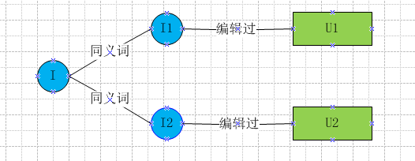
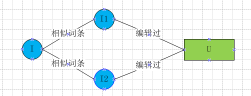
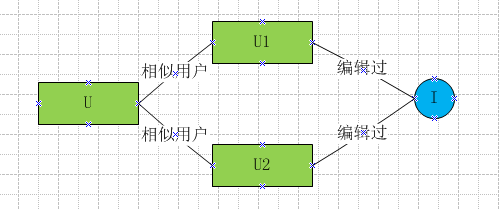

百科词条编辑推荐方法总结
百科有很多新添加和待完善词条，需要将这些词条推送给有能力有意愿的用户进行编辑完善。这是个推荐问题，这里我大致说下我想到的方法，欢迎吐槽探讨~
数据准备
1. 640万词条内容清洗/抽取/分词
2. Session日志中筛选600万高质量用户，基于编辑浏览词条BOW构建用户profile
3. 构建各种词典：比如User->list< Item>，Item->list< User>等。
4. 构建倒排：根据Item->list< term>，User->list< term>正排，构建倒排term->list< Item>，term->list< User>
为了表示方便，下面User/Item/term（切词后的词）分别缩写为U/I/t.
关联关系
该方法比较直接简单，词条I下面有同义词列表，利用同义词的历史编辑用户U，可以为I推荐编辑用户U。
该方法示意图如下，最终得到的是I->list< U>结果，需要转置为U->list< I>供前端展示使用。

该方法有局限性，当词条没有同义词或者很少时，召回会很低，一般把结果用来和其他方法结果进行融合后使用。
ItemCF
ItemCF首先找到词条A的相似词条B，然后将编辑过B的用户U作为结果推荐给A。
这里强调下，由于词条有很丰富的文本信息，这里计算相似度并没有采用传统的利用用户的行为记录为向量的方式，而是直接利用文本的BOW计算cosine相似度。下面的UserCF同，采用user的profile计算相似度。
该方法示意图如下，最终得到的是I->list< U>结果，需要转置为U->list< I>供前端展示使用。

这里需要计算Item[i][j]的相似度稀疏矩阵，首先拉取t->list< I>倒排，比如t->list< I1,I2,I5>，这时I1/I2/I5两两之间对应的Item[i][j]分别加1。当t->list< I>都处理完了，Item[i][j]表就打完了，这就是Item之间cosine相似度的分子部分–笛卡尔积。分母部分L1 Norm可以提前计算好，附在I->list< t>的最后。这样相比两两Item的list< t>直接计算cosine相似度，计算量大大降低了，原因在于很多Item之间根本没有term交集，根本没必要浪费时间在这些相似度为0的Item之间。
当Item量不是很大时，上面方法可以单机完成，但当Item量很大时，尽管Item[][]是稀疏矩阵，单机也是存储不下的，这时就需要分治了。举例来说假如需要计算I1和其他Item的相似度，我们可以只存储原来稀疏矩阵的一行Item[]，通过I1->list< t1,t2>拉取t->list< I>倒排，
假如t1->list< I1,I2,I3>，t2->list< I1,I2,I5>，可以得到I1和I2笛卡尔积为2，I1和I3/I1和I5笛卡尔积均为1，这样I1和其他Item的相似度向量Item[]就都求出来了。同样计算量相比O(N)也大大减少了。
得到Item之间的相似度后，给词条A推荐最相似topK词条的历史编辑用户。用户u对词条i的兴趣为P(u,i)=sum( cosine(i,j) )，其中j为用户u编辑过的词条和topK相似词条的交集。
UserCF
UserCF将用户A的相似用户B编辑过的词条I，作为结果推荐给A。
该方法示意图如下，得到的就是U->list< I>最终结果，可以直接用来展示。

由于User量很大，参照ItemCF存储User[][]稀疏矩阵是不可行的，直接采用分治来填充User[]向量。举例来说假如需要计算U1和其他User的相似度，通过U1->list< t1,t2>拉取t->list< U>倒排，假如t1->list< U1,U2,U3>，t2->list< U1,U2,U5>，可以得到U1和U2笛卡尔积为2，U1和U3/U1和U5笛卡尔积均为1，这样U1和其他User的相似度向量User[]就更新完了。同样计算量相比O(N)也大大减少了。
得到User之间的相似度后，给用户A推荐最相似topK用户的历史编辑词条。用户u对词条i的兴趣为P(u,i)=sum( cosine(u,v) )，其中v为编辑过词条i的用户和topK相似用户的交集。
UserCF相比ItemCF效果相差不大，但由于用户量大于词条量，用户相似度矩阵计算量大于词条相似度矩阵，所以采用ItemCF性能会好一些。
Content-based
由于User和Item都有文本描述，所以可以直接计算用户和词条的内容相似度，选取topK词条进行推荐，输出就是U->list< I>最终结果。
同样的可以利用t->list< U>，t->list< I>倒排计算有term交集的用户和词条相似度，减小计算量。
小结
上面只是大致思路，距真正页面展示还有很长一段路要优化。比如有的用户推荐词条多有的少，如何平均？不基于内容而是利用用户行为记录效果会怎样？推荐词条以何种方式展示对用户最友好？如何冷启动，直接random推送最需要完善的词条？